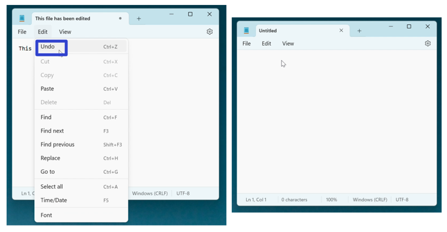
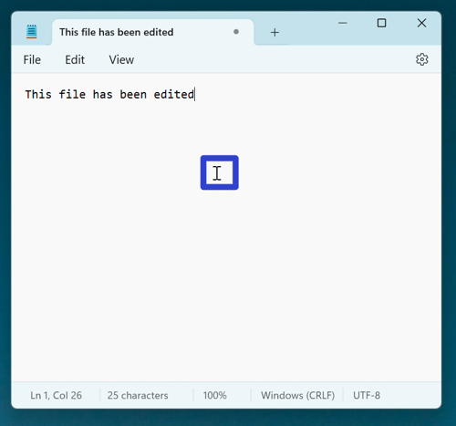
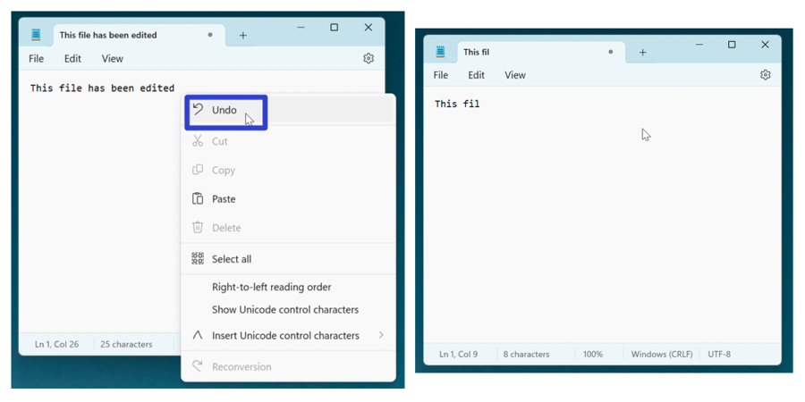
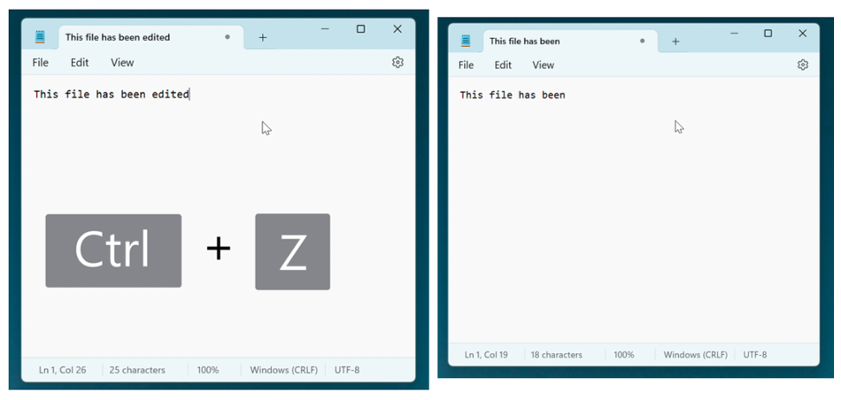
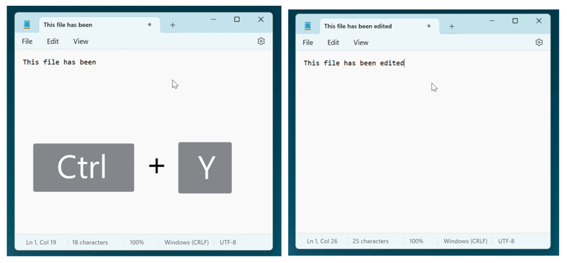

How to Undo and Redo in the Microsoft Notepad App (Windows 11)
This tutorial covers:
How to Undo:
How to Redo With Keyboard Shortcut
No time to scroll down? Click through this presentation tutorial:
Follow along with a tutorial video:
How to Undo With Menu
- Step 1: First edit a Notepad file. In the upper left click the “Edit” button.

- Step 2: In the menu that opens, click “Undo”. Notepad reverses the last action. 
How to Undo With Right Click
- Step 1: Edit a Notepad file. Right click anywhere in the window. 
- Step 2: In the menu that opens, click “Undo”. Notepad reverses the last action. 
How to Undo With Keyboard Shortcut
- Step 1: First edit a Notepad file. On the keyboard press Ctrl +Z. Notepad reverses the last action. 
How to Redo With Keyboard Shortcut
- Step 1: Edit a Notepad file. On the keyboard press Ctrl + Y. Notepad reverses the last Undo. 
Save these instructions for later with this free tutorial PDF.